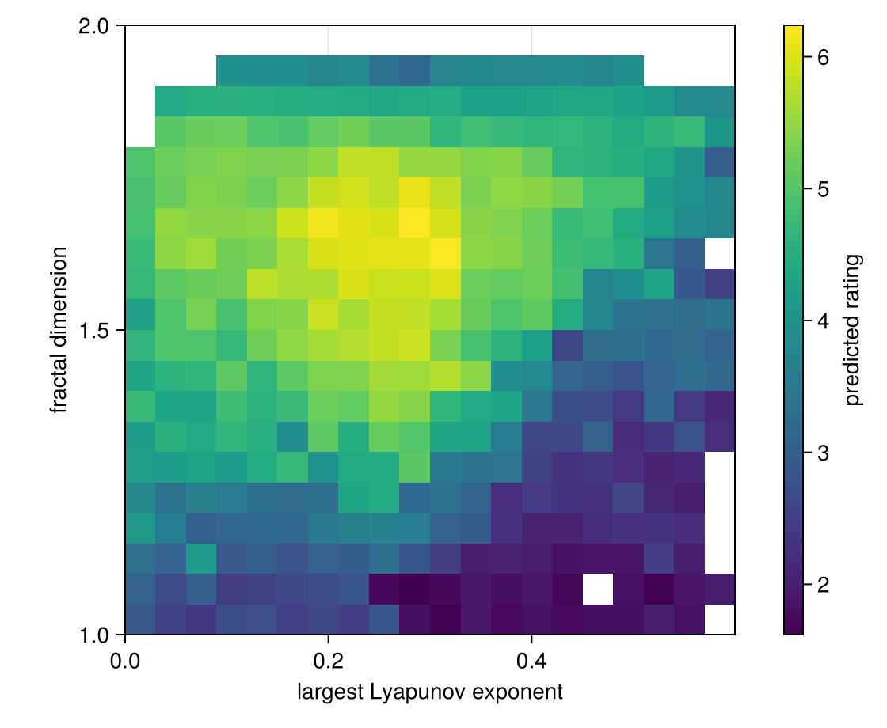
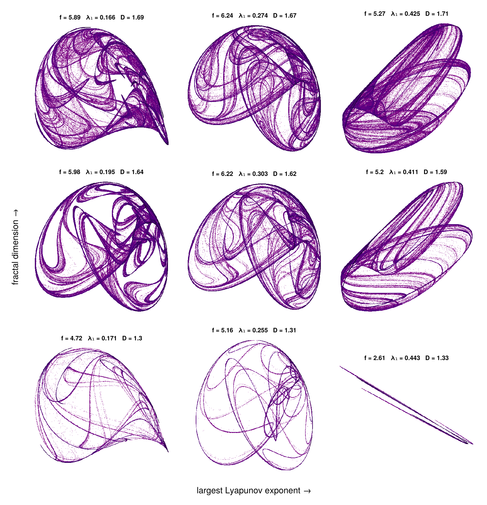
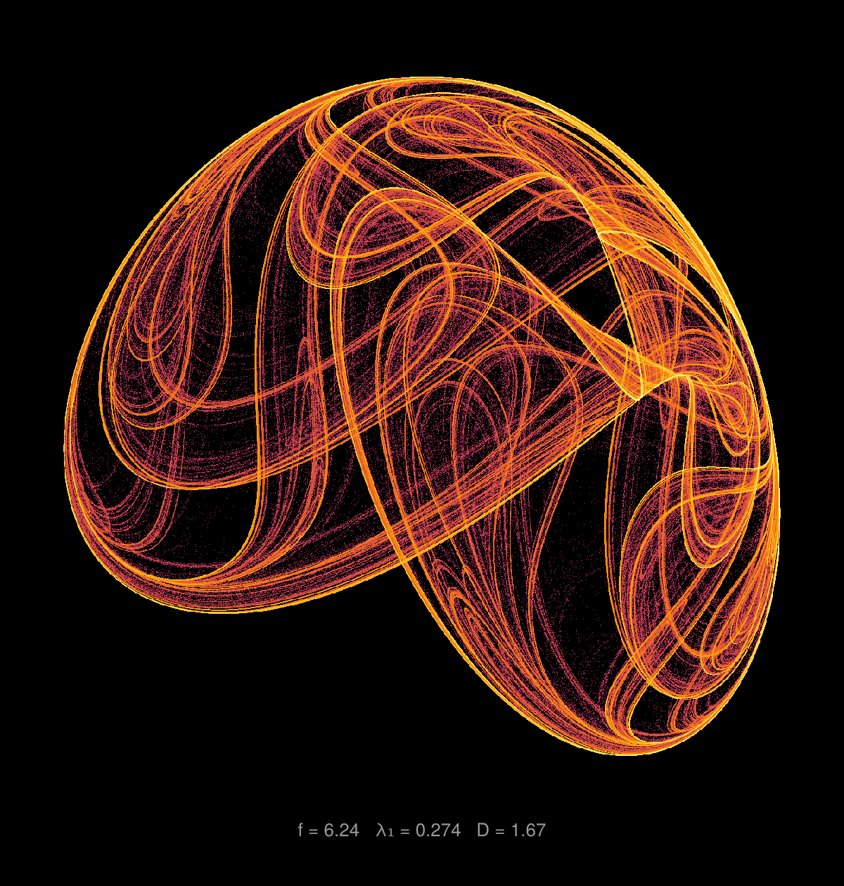

Strange attractors
A quadratic map of the plane sends a point (x, y) to a new point whose coordinates are quadratic polynomials in x and y:
x′ = a₁ + a₂ x + a₃ x² + a₄ xy + a₅ y + a₆ y²
y′ = a₇ + a₈ x + a₉ x² + a₁₀ xy + a₁₁ y + a₁₂ y²For most of the twelve coefficients the orbit of a point escapes to infinity or settles on a fixed point or a cycle. For a few it wanders forever over a strange attractor, a fractal set that can be beautiful to look at. Sprott (1993, "Automatic generation of strange attractors") searched for them at random and described each by its largest Lyapunov exponent and its fractal dimension. Here MAP-Elites fills a grid of those two measures, and in every cell keeps the attractor that a model of aesthetic ratings likes best.
Set up once, from the repository root:
julia --project=examples -e 'using Pkg; Pkg.develop(path="."); Pkg.instantiate()'Run:
julia --project=examples examples/attractors.jlusing CodecZlib: GzipCompressor, transcode
using QualityDiversity
using Random: AbstractRNG, Xoshiro
using Statistics: mean, quantile, stdThe map
A solution is the vector of twelve coefficients. Every orbit starts at (0.05, 0.05); it has diverged once |x| + |y| reaches 10⁶, a test that is also true for NaN.
const Coefficients = Vector{Float64}
const X0, Y0 = 0.05, 0.05
@inline function attractor_step(a, x, y)
nx = a[1] + a[2] * x + a[3] * x^2 + a[4] * x * y + a[5] * y + a[6] * y^2
ny = a[7] + a[8] * x + a[9] * x^2 + a[10] * x * y + a[11] * y + a[12] * y^2
return nx, ny
end
diverged(x, y) = !(abs(x) + abs(y) < 1e6)diverged (generic function with 1 method)The first iterations are a transient that brings the point onto the attractor; transient returns where it ends, or nothing if the orbit diverged.
function transient(a; n=1_000)
x, y = X0, Y0
for _ in 1:n
x, y = attractor_step(a, x, y)
diverged(x, y) && return nothing
end
return x, y
endtransient (generic function with 1 method)The descriptors
The largest Lyapunov exponent λ₁ measures how fast two nearby orbits move apart, in nats per iteration; it is positive for a chaotic orbit. A tangent vector is pushed through the Jacobian of the map at every step, and λ₁ is the mean of the log of its growth.
function lyapunov(a::Coefficients; n_steps=4_000)
s = transient(a)
s === nothing && return -Inf
x, y = s
vx, vy = 1.0, 0.0
total = 0.0
for _ in 1:n_steps
j11 = a[2] + 2 * a[3] * x + a[4] * y
j12 = a[4] * x + a[5] + 2 * a[6] * y
j21 = a[8] + 2 * a[9] * x + a[10] * y
j22 = a[10] * x + a[11] + 2 * a[12] * y
vx, vy = j11 * vx + j12 * vy, j21 * vx + j22 * vy
n = hypot(vx, vy)
n > 0 || return -Inf
total += log(n)
vx /= n
vy /= n
x, y = attractor_step(a, x, y)
diverged(x, y) && return -Inf
end
return total / n_steps
endlyapunov (generic function with 1 method)The other descriptor and the fitness are computed from a histogram of the orbit: how often it visits each cell of a 256 × 256 grid over a square 8% larger than the attractor. A first run of the orbit finds the bounding box.
function orbit_histogram(a::Coefficients; G=256, n_bounds=20_000, n_steps=200_000)
s = transient(a)
s === nothing && return nothing
x, y = s
xmin = xmax = x
ymin = ymax = y
for _ in 1:n_bounds
x, y = attractor_step(a, x, y)
diverged(x, y) && return nothing
xmin, xmax = min(xmin, x), max(xmax, x)
ymin, ymax = min(ymin, y), max(ymax, y)
end
side = 1.08 * max(xmax - xmin, ymax - ymin)
side > 1e-9 || return nothing
left = (xmin + xmax) / 2 - side / 2
bottom = (ymin + ymax) / 2 - side / 2
H = zeros(Int, G, G)
for _ in 1:n_steps
x, y = attractor_step(a, x, y)
diverged(x, y) && return nothing
i = floor(Int, (x - left) / side * G) + 1
j = floor(Int, (y - bottom) / side * G) + 1
(1 <= i <= G && 1 <= j <= G) && (H[i, j] += 1)
end
return H
endorbit_histogram (generic function with 1 method)The box-counting dimension D lies between 1 (a curve) and 2 (a filled area). It counts the occupied cells of the histogram, merges blocks of 2 × 2 cells and counts again, down to a 16 × 16 grid; D is the slope of the log of the count against the log of the grid size.
merge_blocks(occ) = [occ[2i-1, 2j-1] | occ[2i, 2j-1] | occ[2i-1, 2j] | occ[2i, 2j]
for i in 1:size(occ, 1) ÷ 2, j in 1:size(occ, 2) ÷ 2]
function box_dimension(H::AbstractMatrix{<:Integer}; g_min=16)
occupied = H .> 0
log_g, log_n = Float64[], Float64[]
while true
push!(log_g, log(size(occupied, 1)))
push!(log_n, log(count(occupied)))
size(occupied, 1) <= g_min && break
occupied = merge_blocks(occupied)
end
mg, mn = mean(log_g), mean(log_n)
slope = sum((log_g .- mg) .* (log_n .- mn)) / sum((log_g .- mg) .^ 2)
return clamp(slope, 1.0, 2.0)
endbox_dimension (generic function with 1 method)The fitness
The fitness predicts how much a person likes the picture. It combines three features of the histogram, where cᵢ is the number of visits to cell i:
- coverage, the fraction of the cells that the orbit visits;
- contrast, the standard deviation of
log cᵢover the visited cells: bright folds next to faint sheets; - compression, the size of the gzipped 8-bit image
log(1 + cᵢ) / log(1 + c_max)over its raw size: a simple image compresses well, a detailed one does not.
function features(H)
visited = filter(>(0), H)
coverage = length(visited) / length(H)
contrast = std(log.(visited); corrected=false)
image = round.(UInt8, 255 .* log1p.(H) ./ log1p(maximum(H)))
compression = length(transcode(GzipCompressor, vec(image))) / length(H)
return (; compression, coverage, contrast)
endfeatures (generic function with 1 method)The weights come from a ridge regression on 349 ratings from 1 to 5 by the author of this package. Each feature is clipped to the range seen in the rated attractors and standardized. The model was fitted on the same features computed by a separate implementation, so it matches the ratings only approximately here. The fitness is a linear model, so it can exceed 5 even though every feature is clipped: the best attractors of the archive lie where the model extrapolates.
const INTERCEPT = 2.88
const WEIGHT = (compression=2.692, coverage=-1.996, contrast=0.168)
const MEAN = (compression=0.0969, coverage=0.1066, contrast=1.2597)
const SCALE = (compression=0.0710, coverage=0.1089, contrast=0.1942)
const LOW = (compression=0.0118, coverage=0.0068, contrast=0.7506)
const HIGH = (compression=0.3051, coverage=0.4663, contrast=2.1240)
function rating(H)
f = features(H)
z(k) = (clamp(f[k], LOW[k], HIGH[k]) - MEAN[k]) / SCALE[k]
return INTERCEPT + sum(WEIGHT[k] * z(k) for k in keys(WEIGHT))
endrating (generic function with 1 method)The problem
A map is kept only if it is chaotic (λ₁ above 0.005) and its orbit visits at least 400 cells of the histogram. Any other map gets a NaN descriptor, which the archive, built with RejectOutside(), discards; so does a chaotic map with λ₁ above 0.6, outside the grid. The coefficients start uniform in [-1.2, 1.2], the range Sprott used.
const INVALID = (0.0, (NaN, NaN))
function score(a::Coefficients)
λ = lyapunov(a)
λ > 0.005 || return INVALID
H = orbit_histogram(a)
(H === nothing || count(>(0), H) < 400) && return INVALID
return (rating(H), (λ, box_dimension(H)))
end
random_coefficients(rng::AbstractRNG) = 2.4 .* rand(rng, 12) .- 1.2
prob = QDProblem(score; init=random_coefficients, bounds=((0.0, 0.6), (1.0, 2.0)))As a check, the Hénon map x′ = 1 - 1.4 x² + y, y′ = 0.3 x has λ₁ ≈ 0.42 and a box-counting dimension of about 1.26; the coarse estimate here, from a 256 × 256 histogram, comes out at 1.24.
henon = [1.0, 0, -1.4, 0, 1, 0, 0, 0.3, 0, 0, 0, 0]
(lyapunov(henon), box_dimension(orbit_histogram(henon)))(0.42706810495418507, 1.2393447974204304)The variation operator
A child adds a Gaussian step of standard deviation 0.05 to each coefficient of its parent with probability one half, and stays within [-1.2, 1.2].
struct AttractorMutation <: AbstractVariation end
function QualityDiversity.vary(rng::AbstractRNG, ::AttractorMutation, a::Coefficients)
step = rand(rng, Bool, length(a)) .* (0.05 .* randn(rng, length(a)))
return clamp.(a .+ step, -1.2, 1.2)
endRunning MAP-Elites
A budget of 20 000 evaluations fills most of the archive in about a minute on one thread; 100 000 fills a few more cells and finds better attractors in most.
alg = MAPElites(prob; dims=(20, 20), batch_size=1000, genotype=Coefficients,
variation=AttractorMutation(), outside=RejectOutside())
result = solve(prob, alg; budget=20_000, rng=Xoshiro(1))
archive = result.archiveGridArchive with 365 of 400 cells occupiedThe archive
The predicted rating peaks at an intermediate dimension, around D = 1.65, and a moderate exponent, around λ₁ = 0.3. It falls toward D = 1, where the attractors are thin curves with little texture, and toward large λ₁.
using CairoMakie
fig, ax, hm = heatmap(archive; figure=(size=(560, 460),),
axis=(xlabel="largest Lyapunov exponent", ylabel="fractal dimension", aspect=1))
Colorbar(fig[1, 2], hm; label="predicted rating")
fig
Drawing attractors
To draw an attractor we count the visits of its orbit to every pixel of an image shaped like its bounding box, and show the counts on a log scale: the brightest 0.1% of the visited pixels saturate, and the least visited start at floor, so that faint sheets stay visible. Every elite passed the checks of score, so its orbit does not diverge.
function attractor_image(a::Coefficients; resolution=600, n_steps=2_000_000, margin=0.03)
x, y = transient(a)
xmin = xmax = x
ymin = ymax = y
for _ in 1:100_000
x, y = attractor_step(a, x, y)
xmin, xmax = min(xmin, x), max(xmax, x)
ymin, ymax = min(ymin, y), max(ymax, y)
end
w, h = xmax - xmin, ymax - ymin
xmin, xmax = xmin - margin * w, xmax + margin * w
ymin, ymax = ymin - margin * h, ymax + margin * h
nx, ny = w >= h ? (resolution, max(1, round(Int, resolution * h / w))) :
(max(1, round(Int, resolution * w / h)), resolution)
C = zeros(Int, nx, ny)
for _ in 1:n_steps
x, y = attractor_step(a, x, y)
i = floor(Int, (x - xmin) / (xmax - xmin) * nx) + 1
j = floor(Int, (y - ymin) / (ymax - ymin) * ny) + 1
(1 <= i <= nx && 1 <= j <= ny) && (C[i, j] += 1)
end
dx, dy = (xmax - xmin) / nx, (ymax - ymin) / ny
return range(xmin + dx / 2; step=dx, length=nx), range(ymin + dy / 2; step=dy, length=ny), C
end
function tone(C; floor=0.15, gamma=0.8)
top = quantile(log1p.(filter(>(0), C)), 0.999)
return map(c -> c == 0 ? NaN : floor + (1 - floor) * clamp(log1p(c) / top, 0, 1)^gamma, C)
end
function draw_attractor!(ax, a; colormap=cgrad([:plum, :purple, :indigo, "#1a0526"]),
floor=0.15, gamma=0.8, kwargs...)
xs, ys, C = attractor_image(a; kwargs...)
heatmap!(ax, xs, ys, tone(C; floor, gamma); colormap, colorrange=(0, 1), nan_color=:transparent)
hidedecorations!(ax)
hidespines!(ax)
tightlimits!(ax)
return ax
end
label(ev) = "f = $(round(ev.fitness; digits=2)) λ₁ = $(round(ev.descriptor[1]; digits=3)) D = $(round(ev.descriptor[2]; digits=2))"One attractor from each region
We split the archive into 3 × 3 equal blocks and draw the best elite of each, laid out as in the heatmap: λ₁ grows to the right and D upwards.
function best_per_block(archive; blocks=(3, 3))
(lo1, hi1), (lo2, hi2) = QualityDiversity.descriptor_bounds(archive)
best = Matrix{Any}(nothing, blocks...)
for (a, ev) in QualityDiversity.elites(archive)
d1, d2 = ev.descriptor
i = clamp(floor(Int, (d1 - lo1) / (hi1 - lo1) * blocks[1]) + 1, 1, blocks[1])
j = clamp(floor(Int, (d2 - lo2) / (hi2 - lo2) * blocks[2]) + 1, 1, blocks[2])
if best[i, j] === nothing || ev.fitness > best[i, j][2].fitness
best[i, j] = (a, ev)
end
end
return best
end
best = best_per_block(archive)
fig = Figure(size=(790, 820))
for i in axes(best, 1), j in axes(best, 2)
best[i, j] === nothing && continue
a, ev = best[i, j]
draw_attractor!(Axis(fig[size(best, 2) - j + 1, i]; aspect=DataAspect(), title=label(ev), titlesize=10), a;
resolution=500)
end
Label(fig[size(best, 2) + 1, 1:size(best, 1)], "largest Lyapunov exponent →")
Label(fig[1:size(best, 2), 0], "fractal dimension →"; rotation=π / 2)
fig
The best attractor
Finally the elite with the highest predicted rating, drawn from 20 million points with the inferno colormap on black.
a, ev = argmax(((a, ev),) -> ev.fitness, collect(QualityDiversity.elites(archive)))
fig = Figure(size=(600, 630); backgroundcolor=:black, figure_padding=30)
ax = Axis(fig[1, 1]; aspect=DataAspect(), backgroundcolor=:black)
draw_attractor!(ax, a; colormap=:inferno, floor=0.3, gamma=0.6, resolution=1200, n_steps=20_000_000)
Label(fig[2, 1], label(ev); color=:gray60, fontsize=13, tellwidth=false)
# A fixed height keeps the caption row from shrinking the attractor.
rowsize!(fig.layout, 2, Fixed(20))
fig